Prepared by Zainab Fatima
This documentation covers the theory questions and the practical work completed during Week 6. For the practical part, I extended the LEMP guestbook application from the previous weeks by adding a GitHub Actions CI/CD pipeline, Kubernetes health probes, and structured logging. I also tested the deployment and deliberately caused a readiness check to fail so I could see what happens when a pod is not ready.
week6
I kept the Week 6 work on a separate week6 branch instead
of changing the protected main branch. This let me work on
the new CI/CD and observability features without changing the Week 5
version that was already completed.
Continuous Integration (CI) is the process of regularly combining code changes into a shared repository and automatically checking that the changes do not break the project. The idea is that instead of waiting until the end of a project to find problems, developers get feedback soon after making changes. For example, a CI pipeline could build the Docker image and run tests whenever new code is pushed to GitHub.
Continuous Delivery goes one step further. The application is automatically built, tested and prepared so that it is always in a state where it could be released. The final release can still require a person to approve it. So the software is ready for deployment, but the actual deployment does not necessarily happen automatically.
Continuous Deployment goes one step further again. When the code passes the required automated checks, it is automatically deployed without someone having to manually approve every release. This means that a successful change can go from the repository to the running application as part of the same automated process.
I think the easiest way to remember the difference is that Continuous Integration is about checking changes, Continuous Delivery is about keeping software ready to release, and Continuous Deployment is about automatically releasing it.
In my Week 6 project, I implemented a pipeline that is closest to
Continuous Deployment for the week6 branch. When I pushed
my changes, GitHub Actions automatically built the backend Docker image,
pushed it to Docker Hub, logged into Rahti, updated the backend
Deployment and waited for the rollout to complete.
This was useful because I did not have to manually build the image and then manually update the Deployment every time. The pipeline connected these steps together.
Source: Atlassian documentation on Continuous Integration, Continuous Delivery and Continuous Deployment.
A GitHub Actions workflow is a YAML file that describes what should happen automatically when something happens in a GitHub repository. The workflow normally contains a trigger, jobs and steps.
The trigger decides when the workflow should start. For
example, it can run when code is pushed to a particular branch. In my
Week 6 project, I used a push trigger for the week6 branch,
so pushing new changes to that branch starts the workflow.
A job is a group of related tasks that runs on a GitHub
Actions runner. My workflow has one job called
build-push-deploy. Inside that job I have several steps
that are executed in order.
The steps are the individual actions or commands that make up the job. In my workflow, the first step checks out the repository so the runner has the project files. The next steps log into Docker Hub, build the backend Docker image and push it to Docker Hub. After that, the workflow installs the OpenShift CLI and logs into the Rahti project. Finally, it updates the backend Deployment and waits for the rollout to finish.
A minimal pipeline for the guestbook application would therefore need to do something like this:
My Week 6 workflow follows this same basic process. I used the Git
commit SHA as the Docker image tag. This means that the image deployed
to Rahti can be connected back to the exact commit that triggered the
workflow. For example, instead of always deploying an image called
latest, the workflow produced an image with a tag based on
the commit SHA.
on:
push:
branches:
- week6
jobs:
build-push-deploy:
runs-on: ubuntu-latestOne thing I learned from this is that a CI/CD pipeline is not just a GitHub Actions file that turns green. For this assignment, the important part was that the workflow actually changed the running application in Rahti. That is why I also checked the deployed image and the final public application after the workflow completed.
Source: GitHub Actions documentation on workflows, jobs and steps.
The three main pillars of observability are metrics, logs and traces. They give different types of information about what is happening inside an application. They are related, but each one is useful for answering different questions.
Metrics are numerical measurements collected over time. Examples include CPU usage, memory usage, request count, response time or error rate. Metrics are useful when I want to see the overall state or behaviour of an application.
For example, a question that metrics could answer is: "Has the error rate of my backend increased during the last 30 minutes?" A graph showing the HTTP error rate over time would make it easier to notice a change compared with looking at individual requests.
Logs are records of events that happened in the application. They can contain details about individual requests, errors, warnings and other events. Logs are especially useful when I need to find out what happened at a particular moment.
For example, a question that logs could answer is: "Which endpoint returned an HTTP 500 error?" In my Week 6 project, I added structured JSON request logging to the Flask backend. Each request can include the HTTP method, path, response status and request duration.
{
"event": "http_request",
"method": "GET",
"path": "/healthz",
"status": 200,
"duration_ms": 0.08
}
I could then use oc logs to retrieve these records from the
backend pod. This made the logging part of observability something I
could actually test instead of only reading about it.
Traces are used to follow a request as it moves through different parts of an application. This becomes especially useful when an application has several services and it is not immediately obvious which part is causing a delay.
For example, a tracing system could answer: "Why did this particular request take two seconds to complete, and which service caused most of the delay?" A trace could show the time spent in the frontend, backend and database separately.
| Observability pillar | What it tells me | Example question |
|---|---|---|
| Metrics | Numerical values and trends over time. | Has the backend error rate increased? |
| Logs | Specific events and details from the application. | Which request or endpoint produced an error? |
| Traces | The path and timing of a request through multiple services. | Which part of the application made this request slow? |
For this assignment I mainly implemented logging and health checks
rather than setting up a complete metrics and tracing system. Even
though the project is small, adding structured logs was useful because I
could retrieve information from the actual running backend with
oc logs.
Source: OpenTelemetry documentation on observability signals.
A liveness probe and a readiness probe are both health checks, but they answer different questions. The easiest way I understand the difference is that liveness asks whether the application is still alive, while readiness asks whether the application is ready to receive traffic.
A liveness probe is used to check whether a container
is still functioning. In my application, the liveness probe calls the
/healthz endpoint. This endpoint simply returns a
successful response when the Flask application is responding.
livenessProbe:
httpGet:
path: /healthz
port: 8000
initialDelaySeconds: 10
periodSeconds: 10
timeoutSeconds: 3
failureThreshold: 3If the liveness probe repeatedly fails, Kubernetes can treat the container as unhealthy and restart it. This is useful for situations where the application is stuck or has reached a state where restarting the container may recover it.
A readiness probe is different. It checks whether the
application is ready to receive normal traffic. In my project, the
readiness endpoint is /readyz. It tries to connect to MySQL
and only returns a successful response when the backend can access the
database.
readinessProbe:
httpGet:
path: /readyz
port: 8000
initialDelaySeconds: 10
periodSeconds: 10
timeoutSeconds: 3
failureThreshold: 3If the readiness probe fails, Kubernetes does not consider the pod ready for normal Service traffic. Importantly, the container does not necessarily get restarted just because it failed the readiness check. The application can still be running but temporarily unable to serve requests correctly.
I actually tested this part instead of only putting the probes in the
YAML file. I temporarily changed the readiness probe from
/readyz to a path that did not exist:
readinessProbe:
httpGet:
path: /not-a-real-endpoint
port: 8000
After applying the change, the new backend pod was still shown as
Running, but it was 0/1 ready. This was a
useful test because it showed the difference between liveness and
readiness in practice. The container itself was still running, but
Kubernetes did not consider it ready to receive normal traffic.
I then restored the correct /readyz endpoint. After the
probe was fixed, I also restored the SHA-tagged backend image and waited
for the rollout to complete. The backend became healthy again.
| Probe | Main question | My Week 6 endpoint | What happens if it fails? |
|---|---|---|---|
| Liveness | Is the container/application still alive? | /healthz |
Repeated failure can cause the container to be restarted. |
| Readiness | Is the pod ready to receive traffic? | /readyz |
The pod is marked not ready and is removed from normal Service traffic until it becomes ready again. |
This was probably the part of Week 6 that made the most sense to me
after actually testing it. Before the practical work, I mostly thought
of both probes as general health checks. After deliberately breaking the
readiness endpoint and seeing 0/1 while the pod was still
running, the difference became much clearer.
Source: Kubernetes documentation on liveness, readiness and startup probes.
The project is the LEMP guestbook application I built in the previous weeks. The frontend is served by Nginx, the backend is a Flask application, MySQL stores the guestbook data, and Redis was added in Week 5 for caching.
I kept the existing Week 5 functionality and added the Week 6 features around it rather than rebuilding the application from scratch.
Before changing anything, I checked the existing application and backend deployment in Rahti. This was useful because I wanted to make sure the Week 6 work was being added to the existing project rather than accidentally creating a different application.
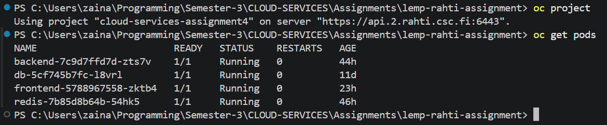
I added two simple endpoints to backend/app.py. The
liveness endpoint is intentionally simple because its job is to show
that the Flask application itself is responding. The readiness endpoint
is a little more useful because it checks the MySQL connection before
returning that the backend is ready.
# Kubernetes liveness probe
@app.get("/healthz")
def healthz():
return jsonify({"status": "ok"}), 200
# Kubernetes readiness probe
@app.get("/readyz")
def readyz():
try:
conn = get_db_connection()
conn.close()
return jsonify({"status": "ready"}), 200
except Exception:
return jsonify({"status": "not ready"}), 503I chose these endpoints because they make the two checks easy to test from inside the backend container and easy for Kubernetes to call.
I tested the liveness endpoint and received HTTP 200 with the expected JSON response.
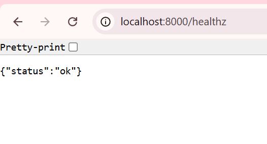
/healthz liveness endpoint returned
HTTP 200.
I also tested the readiness endpoint. When the backend was connected to
the working MySQL deployment in Rahti, it returned HTTP 200 and
{"status":"ready"}.
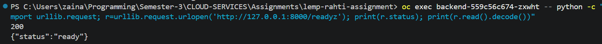
/readyz readiness endpoint returned
HTTP 200 and showed that the backend was ready.
I added both probes to k8s/backend-deployment.yaml. Both
checks use HTTP on port 8000. The liveness probe calls
/healthz and the readiness probe calls
/readyz.
livenessProbe:
httpGet:
path: /healthz
port: 8000
initialDelaySeconds: 10
periodSeconds: 10
timeoutSeconds: 3
failureThreshold: 3
readinessProbe:
httpGet:
path: /readyz
port: 8000
initialDelaySeconds: 10
periodSeconds: 10
timeoutSeconds: 3
failureThreshold: 3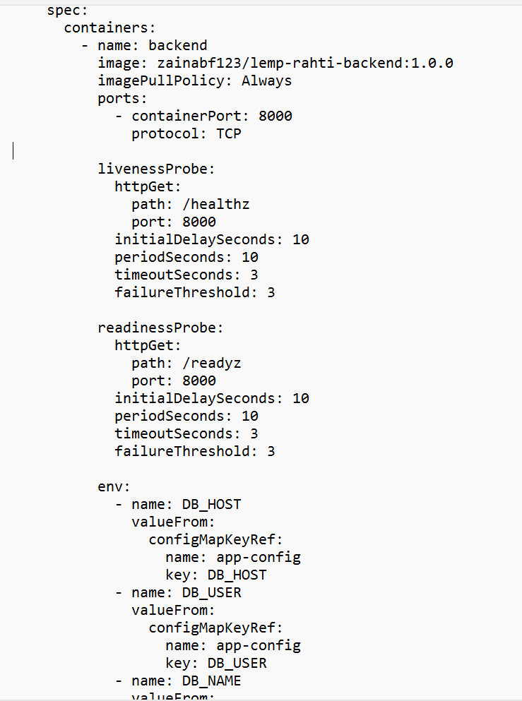
I then checked the running pod and confirmed that the probes were actually present on the deployed container rather than only existing in the YAML file.
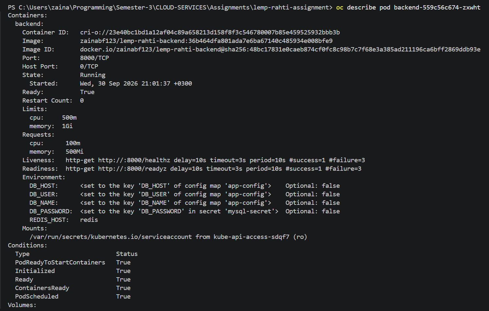
The assignment specifically asked for the readiness check to be
deliberately failed. To test this, I temporarily changed the readiness
path from /readyz to a path that does not exist.
readinessProbe:
httpGet:
path: /not-a-real-endpoint
port: 8000
After applying this temporary change, a new backend pod was created. The
pod was still
Running, but it was not ready, so it showed
0/1. This was exactly the behaviour I wanted to
demonstrate: a readiness failure keeps the pod from being treated as
ready for normal Service traffic, rather than automatically treating the
container as dead.
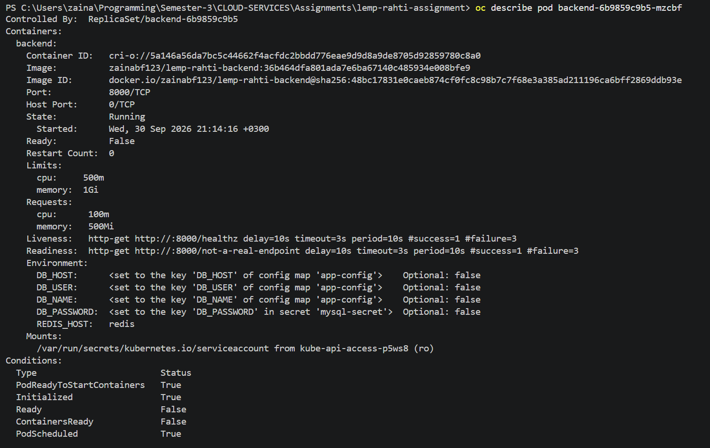
After taking the screenshot, I restored the correct
/readyz path. Applying the Deployment manifest reset the
image field to the image written in the manifest, so I then used
oc set image to put the CI/CD image back on the Deployment
and waited for the rollout to complete.
/readyz probe and confirmed that the
backend became healthy again.
I also added a small amount of structured logging to the Flask backend. The goal was to make each HTTP request easier to inspect. Instead of only printing a normal text message, the backend writes JSON containing the event name, HTTP method, request path, response status and request duration.
logging.basicConfig(
level=logging.INFO,
format="%(message)s"
)
logger = logging.getLogger(__name__)
@app.before_request
def start_request_timer():
request.start_time = time.perf_counter()
@app.after_request
def log_request(response):
duration_ms = round(
(time.perf_counter() - request.start_time) * 1000,
2
)
logger.info(json.dumps({
"event": "http_request",
"method": request.method,
"path": request.path,
"status": response.status_code,
"duration_ms": duration_ms
}))
return response
This means that a request such as GET /healthz produces a
log entry containing information like the request path and status code.
It is useful because I can retrieve the logs with
oc logs without needing to change the application code
again just to investigate a request.
I used oc logs on the running backend pod and could see the
JSON request records. The logs included successful calls to both
/healthz and /readyz.
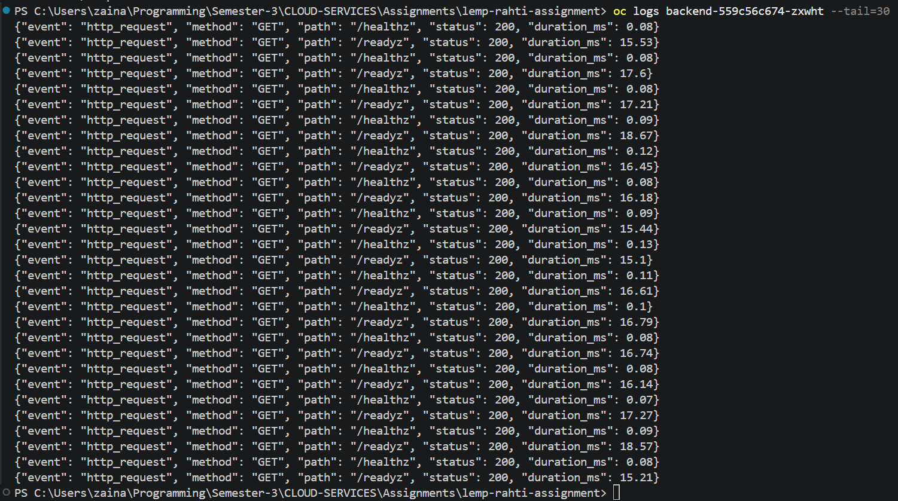
oc logs.
A simplified example of the output is:
{"event": "http_request", "method": "GET", "path": "/healthz", "status": 200, "duration_ms": 0.08}
{"event": "http_request", "method": "GET", "path": "/readyz", "status": 200, "duration_ms": 1.23}I found this more useful than a plain message because the fields have a consistent structure. For a larger application, these fields could be collected by a logging system and searched or used as part of an alert.
Before relying on the GitHub Actions deployment, I also tested the backend locally. I rebuilt the backend image with Docker Compose and checked that the Python application could be compiled. I also tested the new endpoints.
docker compose -f docker-compose.dev.yml build backend
docker run --rm lemp-rahti-assignment-backend:latest \
python -m py_compile /app/app.py
The image build succeeded and the Python compile check succeeded. The
local
/healthz endpoint returned {"status":"ok"}.
The local /readyz check returned
{"status":"not ready"} because my local MySQL
credentials/data did not match the running local database. I checked the
MySQL connection separately and confirmed that the problem was database
access, not the Flask route itself.
docker compose down -v to try to fix the
local database because that command can remove Docker volumes. I wanted
to avoid deleting the existing local database data just for this test.
I created .github/workflows/week6-cicd.yml. The workflow is
triggered when code is pushed to the week6 branch. I used
the separate Week 6 branch so the protected Week 5/main version stayed
unchanged.
name: Week 6 CI/CD
on:
push:
branches:
- week6
jobs:
build-push-deploy:
runs-on: ubuntu-latest
steps:
- name: Checkout repository
uses: actions/checkout@v4
- name: Log in to Docker Hub
uses: docker/login-action@v3
with:
username: ${{ secrets.DOCKERHUB_USERNAME }}
password: ${{ secrets.DOCKERHUB_TOKEN }}
- name: Build backend image
run: |
docker build \
-f backend/Dockerfile \
-t ${{ secrets.DOCKERHUB_USERNAME }}/lemp-rahti-backend:${{ github.sha }} \
.
- name: Push backend image
run: |
docker push \
${{ secrets.DOCKERHUB_USERNAME }}/lemp-rahti-backend:${{ github.sha }}
- name: Install OpenShift CLI
uses: redhat-actions/oc-installer@v1
- name: Log in to Rahti
uses: redhat-actions/oc-login@v1
with:
openshift_server_url: https://api.2.rahti.csc.fi:6443
openshift_token: ${{ secrets.RAHTI_TOKEN }}
namespace: cloud-services-assignment4
- name: Apply backend configuration and deploy image
run: |
oc apply -f k8s/backend-deployment.yaml
oc set image deployment/backend \
backend=${{ secrets.DOCKERHUB_USERNAME }}/lemp-rahti-backend:${{ github.sha }}
oc rollout status deployment/backend --timeout=180s
The image tag uses ${{ github.sha }}. This means each
workflow run produces a traceable image tag based on the exact Git
commit that triggered the workflow. This is better for this assignment
than always using a tag such as latest, because I can see
which commit produced the deployed image.
The workflow needs credentials for Docker Hub and Rahti, but none of the actual secret values are stored in the repository. I created the following GitHub repository secrets:
| Secret | Purpose |
|---|---|
DOCKERHUB_USERNAME |
Used to identify the Docker Hub account for the backend image. |
DOCKERHUB_TOKEN |
Allows GitHub Actions to authenticate to Docker Hub and push the image. |
RAHTI_TOKEN |
Allows GitHub Actions to authenticate to the Rahti/OpenShift project. |
The documentation intentionally does not contain the secret values. The
workflow only references the names through the GitHub Actions
secrets context.
After committing the Week 6 changes, I pushed the branch to GitHub. The push triggered the Week 6 GitHub Actions workflow automatically.
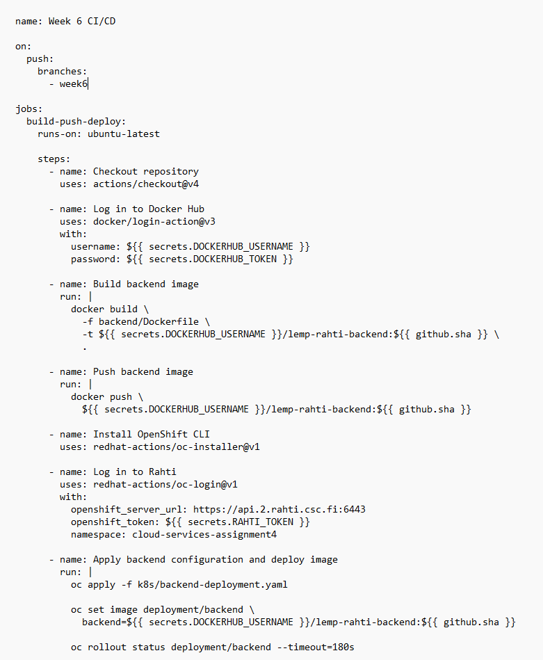
The workflow completed successfully. It checked out the repository, logged into Docker Hub, built the backend image, pushed the image, installed the OpenShift CLI, logged into Rahti, updated the backend Deployment and waited for the rollout.
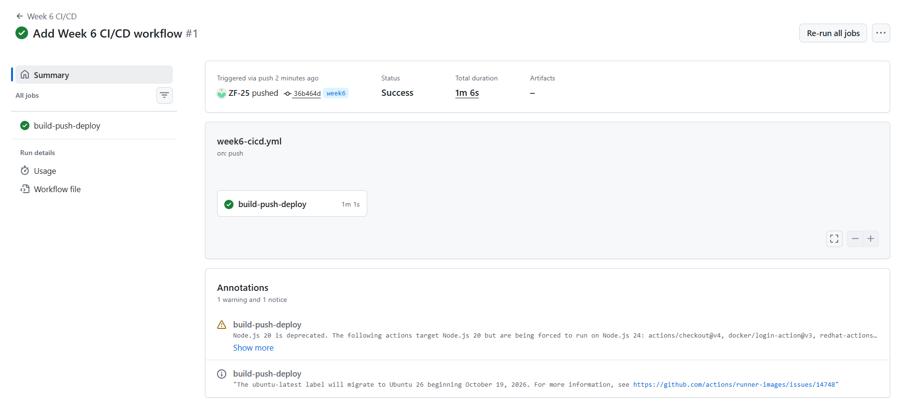
The deployment step uses the Git commit SHA as the Docker image tag. One deployed backend image from the successful run was:
zainabf123/lemp-rahti-backend:36b464dfa801ada7e6ba67140c485934e008bfe9I checked the Deployment image directly in Rahti using:
oc get deployment backend \
-o jsonpath="{.spec.template.spec.containers[0].image}"The returned image matched the commit SHA from the CI/CD run. This gives evidence that the workflow changed the real Deployment instead of only producing a successful GitHub Actions checkmark.
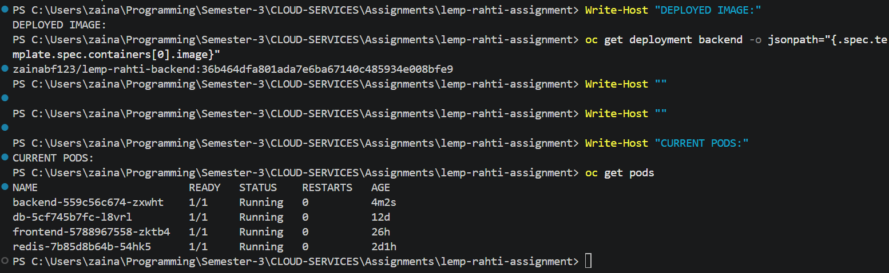
After the deployment finished, I opened the public guestbook application again. The application was working and the existing Week 5 guestbook data was still visible.
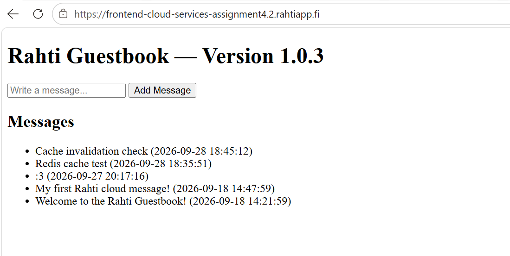
I did not add a new guestbook message just for the screenshot. I used the existing application state to confirm that the frontend was still reachable after the backend deployment.
| Problem | What happened | Solution |
|---|---|---|
| Local readiness check failed |
The local /readyz endpoint returned
503 because the local MySQL credentials/data did not
match what the backend expected.
|
I tested the MySQL connection separately and kept the local database intact instead of deleting the Docker volume. The same readiness check worked in the actual Rahti deployment. |
| Readiness probe deliberately failed |
I temporarily changed the probe path to a non-existing endpoint. The
new pod stayed
Running but became 0/1 ready.
|
I restored /readyz, reapplied the correct configuration
and then used oc set image to put the CI/CD image back
on the Deployment.
|
| Deployment manifest image changed during restore |
Applying the Kubernetes manifest restored the image written in the
YAML, which was
1.0.0, instead of the SHA-tagged CI/CD image.
|
I explicitly ran oc set image deployment/backend with
the SHA-tagged image and waited for the rollout to finish.
|
| Protecting the previous week's work | I did not want to make unnecessary changes to the protected Week 5/main version. |
I kept the Week 6 work on the separate week6 branch and
documented the new work there.
|
I did not install a full Prometheus/Grafana alerting system as part of this week's practical work. However, I did create structured logs and tested the health checks, so I now have useful signals that could be used for alerting.
Based on the logs and health checks I collected, one practical alert for this application would be:
I would not alert on every individual GET /healthz request
or every short delay, because that would create unnecessary
notifications. The readiness failure test also showed why an alert about
"no ready backend" could be useful: the pod can still be running while
not being able to receive normal application traffic.
For a real production setup, I would connect these signals to a monitoring/alerting system and tune the thresholds after observing normal traffic. For this student project, keeping the number of alerts small makes more sense than trying to monitor every possible metric.
The main thing I learned from this week is that deployment automation is not just about building a Docker image. The useful part is connecting the whole process together: a code change starts the workflow, the image is built and stored, the cluster is updated, and the rollout is checked.
I also understood the difference between liveness and readiness much
better after deliberately breaking the readiness endpoint. Before
testing it, I mostly thought of both probes as just "health checks".
Seeing the pod remain running but become 0/1 made the
difference much clearer.
The structured logging part was also useful because I could see real
request information from the running application using
oc logs. This made observability feel more practical than
just learning the definitions of metrics, logs and traces.
/healthz liveness endpoint added and tested./readyz readiness endpoint added and tested against
MySQL.
oc logs.
Week 6 extended the guestbook project from simply running on Rahti to having a basic automated deployment and observability setup. GitHub Actions now handles the backend image build and deployment, while Kubernetes health probes help Rahti distinguish between a running container and a pod that is actually ready to receive traffic. Structured logs also make it easier to see what the backend is doing.
The most useful part for me was testing the readiness failure on purpose. It showed that a deployment can look like it is running while the application is not actually ready to serve traffic. Overall, the Week 6 work gave me a better understanding of how CI/CD and basic observability fit together with the Kubernetes deployment I built in the earlier weeks.
All screenshots used in this document are stored in the project's
frontend/docs-images/ directory and are referenced with
relative paths so the documentation can be served together with the
frontend.